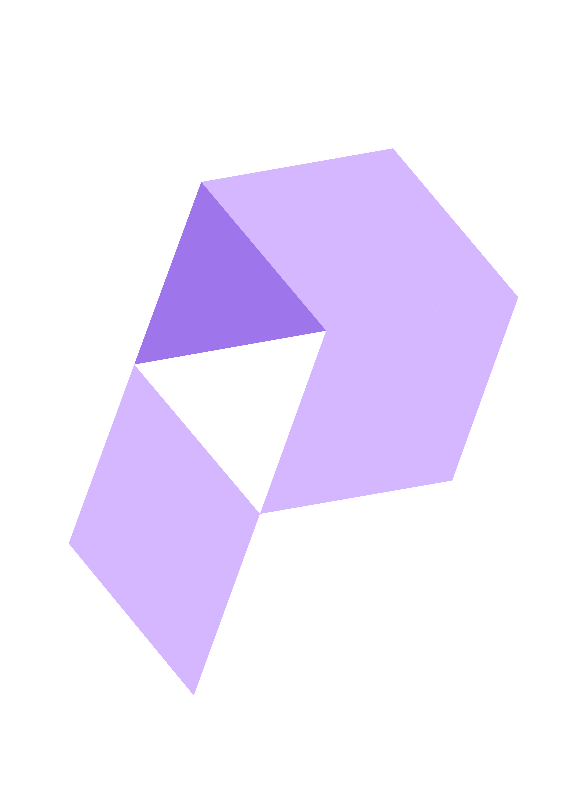

I like hardware, AI and leading teams to build projects. I bring a process-centric mindset to all my work. I am currently a Senior at Stanford finishing my EE Bachelor's (Hardware & Software specialisation) in June 2021 and will take an extra quarter to finish my CS coterminal Master's (AI specialisation; currently applying) in December 2021.
Philip Mateo Pfeffer

MY ORGANISATIONS
The Creator's Community
Product Hub of Stanford Students
We are creating Stanford’s go-to place for future founders to make building side-projects into a relentless, achievable habit. I founded and am growing the community. Our first ‘Gap Month’ of three themed houses - 15 total future founders - has just wrapped. Currently, we're interviewing the next cohort of aspiring founders (please get in touch!) for admission to the second Gap Month.
Read more...

FLEX Quarter
I run an intensive weekly workout group for friends, FLEX Quarter. We're so official, we even have a site: flexquarter.co.uk!
Read more...
MY PROJECTS
Haptic Vest
Category
AI on Edge Hardware
What is it?
Imagine being visually impaired but still able to feel the movement of surrounding crowds and cars on your body. Imagine being a peacekeeper but resting assured that unexpected movements behind you will be transduced into your shirt. Imagine being a twenty year-old playing Pokémon Go and receiving a haptic vibration pointing you towards your next catch. This can be achieved by wearing a 'haptic vest' that uses a camera to capture images, a computer vision model to process them and coin-sized vibration motors that vibrate the shirt to communicate the output.
Why this project?
I wanted to learn about AI computer vision on the edge. This application allows me to learn about and experiment with AI on hardware while building a full end-to-end project. I have been trying out ideas to make computer vision better on edge devices without needing to build a full self-driving car :). I love the idea of an AI + AR driven world, like that presented in Daemon and FreedomTM by Daniel Suarez.
Read more...